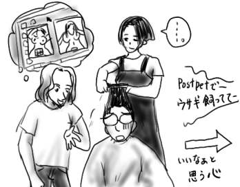
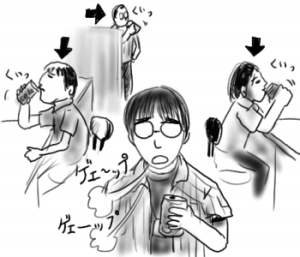

髪が伸びて来たので美容室まで出かけました。配属されてすぐに、会社の人(仮)の友人が働いているからということで紹介してもらって、かれこれ1年くらい利用している美容室です。
入店して座るなり、会社の人(仮)の友人が僕の所にやってきます。
「パソコンで、ソフト入れ替えたいなって思うんですけど、Windows2000とWindowsMeとどっちがいいんですかねぇ？」
そんなこといきなり聞かれても！ソフトというかそれってOSですよ。あと「エムイー」じゃなくて「ミー」ですよ、と思ったけど言えませんでした。とりあえず、2000だといろいろ動かないことがあるからMeでいいんじゃないですかね？と無難に返しておきました。
ぽかんとして「パソコンの話ですか？」と聞くスタイリストの女子に、その友人はこう続けます。
「ミズグチさんはパソコンプロ級らしいよ。ゲームとか作っちゃうような人だって聞いたよ」
何適当に話しとん！会社の人(仮)！！というかプロって！
二の句がつげない僕の後ろで、スタイリスト女子が答えます。
「あぁ！作ってそうですよね」
どういう意味ですか！！
愕然として髪を切られる僕に、その友人は「アイコラ」とか「モザイクはずし」等の話題を振り続けます。それにつれてスタイリスト女子の口数もどんどん少なく！はにゃーん！
ああ、なんか端の方の席では、パソコン買ってポストペットやってる話してますよ。あっちは平和だな、アハハウフフ。あっちの会話に入りたいなぁ。アハハウフフ。

髪を切った分の何かが、僕の心からなくなったみたいです。
オフィスでの嗜好品と言えば、珈琲。
バリバリと仕事をこなし(主に電話をかけるなどして)、ちょっと一息って感じで書類を小脇に抱えながらオフィスの傍らのウニマットから琥珀色の液体を注いで、軽く一口。熱い液体が喉を伝い、ようやくほーっと息を吐き出す。そんな感じではないでしょうか。
僕の部署ではそんなメイクドラマなオフィスラブ(ラブ？)があるはずもなく、なぜか好んで飲まれる嗜好品は珈琲ではなくてコカコーラ(口可口楽)です。しかも摂取量が尋常ではなくて、出社したら自動販売機でコーラ、昼食後に軽く一本コーラ、3時のおやつにコーラ、退社前の喉の渇きにコーラ、という感じです。成人が一日に摂取してよい砂糖は約20gで、加糖飲料(清涼飲料水)に含まれる砂糖は約15〜22gなので、目安に覚えておきましょう。
常々違和感を持っていた僕ですが、本日、出社後に自動販売機でコーラを買ってみました。たまたま早く出社したために、いつもの出社時間には開いている売店がまだ開いていなかったのです。半分ほど飲んだところで、胃がキリキリしてきました。みんなはこんなことないのですか、ひょっとして僕意外のみんなはバイオミラクル(ウパ！)なのでしょうか？どうなのですか。

先日、幕張メッセで開催された東京ゲームショウに、大学時代の友人達と出かけてきました。
入場料の元はとれないだろうなくらいの気持ちで行ったのですが、割とよかったです。PS2も来年あたりからソフトが充実してきそうですね。コナミブースの「METAL GEAR SOLID 2」のデモ映像では、スネークの光学迷彩(!)に雨滴がかかってたり、敵の防弾ガラスシールドを撃ち続けると白く曇ってきたり、背景のワインボトルに流れ弾が当たると爆ぜたり、蛍光燈を撃って明かりを消せたり、とにかくやりすぎですよ小島監督。ナムコブースでは、前作のエンディングで何回泣いたことか！超好バランスアクション「風のクロノア」の２が出てましたけど、なんかセガの某ハリネズミたらいまわしアクションみたいになってました。スケボー！そもそも前作だけで話が閉じてしまっているので、２と言われてもピンと来ません。そして、デモ映像だけですが「AC4」！口開けて映像に感嘆。地上とかほとんど実写ですよ！AC3の方向で行くみたいですが、個人的には肯定です。
あと、城の上から飛び上がり、太陽をバックにキャット空中回転を決める曹操(with 赤い闘気)と、それを見て馬から飛び上がった劉備(with 青い闘気)が空中で剣を交わすデモ映像が異常な「決戦２」by KOEI は頭がおかしいなぁと思いました。佐伯日菜子面のヒミコ(中国？)が妖術で500人の兵士を雷とか竜巻でなぎ倒します。
とりあえず、ゲームショウの感想を一言でいうと「日本はまだまだ豊かになりますぞ〜！」でした。適当です。